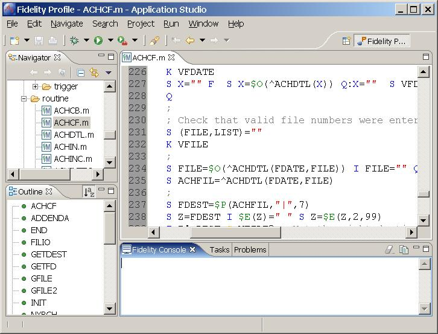

The Fidelity Application Studio has an editor specifically designed for coding M programs. Commands, functions, keywords and comments are color coded to improve readability. Interface functions are readily available as a right click menu option.
